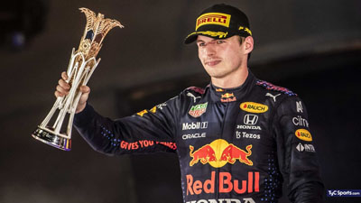

Nació el 30 de septiembre de 1997 es un piloto de automovilismo neerlandés. Ganó el Campeonato Mundial de Karting en 2013 y fue tercero del Campeonato Europeo de Fórmula 3 de la FIA en su debut en monoplazas. El 3 de octubre de 2014, siendo piloto de reserva de la escudería Toro Rosso , formó parte en la primera sesión de entrenamientos libres del Gran Premio de Japón de 2014,con 17 años y tres días, de esa forma fue la persona más joven en la historia de la Fórmula 1 en participar en un fin de semana de carreras.
Desde 2015 compite en Fórmula 1, debutando en la escudería Toro Rosso. A partir de 2016 lo hace en el equipo Red Bull Racing, obteniendo dos terceros puestos en 2019 y 2020, y resultando tricampeón del Campeonato Mundial de Fórmula 1 con los títulos obtenidos en 2021, 2022 y 2023.
Max Verstappen es el tercer piloto con mayor número de victorias en la historia de la categoría con 58 grandes premios ganados, el séptimo con más podios: 103, el quinto con más pole position: 38, el sexto con más vueltas rápidas: 32, y el tercero con más Grand Chelem igualado con Alberto Ascari y Michael Schumacher: 5.
Posee varios récords como el piloto más joven de la Fórmula 1: Competir en un Gran Premio, hizo su debut con 17 años y 166 días en el Gran Premio de Australia de 2015 con la Scuderia Toro Rosso. 7 Sumar puntos en el Gran Premio de Malasia de 2015 con 17 años y 180 días. Ganar un Gran Premio. Subir al podio. Liderar una vuelta durante un Gran Premio. Los récords mencionados en los puntos 3, 4 y 5 fueron logrados teniendo 18 años, 7 meses y 15 días en el Gran Premio de España de 2016. 8 Vuelta más rápida en el Gran Premio de Brasil de 2016 con 19 años y 44 días. Récord de vuelta en una sesión, esta fue en el tercera práctica libre en el Autódromo Hermanos Rodríguez (México) el 28 de octubre de 2017. En el Gran Premio de Austria de 2021 después de 128 grandes premios, 50 podios y 15 victorias, consiguió su primer Grand Chelem con 23 años, 9 meses y 4 días. 9 Obtener 100 podios con 26 años, 5 meses y 9 días en el Gran Premio de Arabia Saudita de 2024.
Fue el primer ganador en la historia de una carrera sprint, clasificatoria para el Gran Premio de Gran Bretaña de 2021. Ese año se proclamó campeón de Fórmula 1 tras ganar en el Gran Premio de Abu Dabi; última carrera de la temporada; derrotando al defensor del título Lewis Hamilton en la vuelta final, con quien había llegado empatado en puntos. De esta forma, también se convirtió en el primer neerlandés en obtener el título. Dicha temporada fue catalogada casi en forma unánime, como una de las mejores en la historia de la categoría.
En 2023 logró dos récords con respecto a las vueltas lideradas, tanto en su cantidad como en el kilometraje recorrido, 1003/1325 (75,70 %) y 4914/6700 (73.34 %) respectivamente.